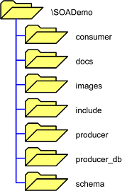

|

|
Directory Structure

|
To distinguish between the different packages in the DB2 Health Monitor Sample Application, each package has been placed in its own directory. This directory layout provides another way to view the structure of an SOA application. |
Folder Layout
To deploy the sample application, place the unzipped application (containing
this directory structure) into the publicly visible folder of the Apache HTTP Server.
On a default Windows installation this directory is:
C:\Program Files\Apache Group\Apache2\htdocs\

SOADemo Folder
This is the root directory of the DB2 Health Monitor Sample Application. It houses all
other directories for the application, as well as all of the
Web Service Consumer GUI
files.
Both the Web service WSDL document URL, in the
Web Service Consumer
config.xml file and
the Web service SOAP server URL in the
Web Service Producer
DB2Health_Report.wsdl
file use the name of this directory. Therefore, it is possible to change the name
of the root directory as long as it is reflected in the
config.xml and
DB2Health_Report.wsdl
files (all other paths are relative). In any multi-tier architecture chosen (See
Deployment Models), this root
directory is required on both the first- and second-tier Web servers to house the required
subdirectories as shown above.
Consumer Folder
This directory holds all of the Web Service Consumer components. In any multi-tier architecture chosen (See Deployment Models), this directory is placed on the first-tier Web server.
Docs Folder
This directory holds the code documentation for all PHP components of the DB2 Health Monitor Sample Application for PHP, as well as the configuration file that was used with the PHPDocumentor tool in order to generate it. The directory also contains IBM licensing information for the sample application. This directory is not required by any of the sample application components, however, a copy should be placed on all tiers (See Deployment Models), so that developers and application users understand their usage rights.
Images Folder
This directory holds all images required by the DB2 Health Monitor Sample Application. In any multi-tier architecture chosen (See Deployment Models), this directory is placed on the first-tier Web server.
Include Folder
This directory holds all third-party packages required by the DB2 Health Monitor Sample Application. In this case, no third-party packages are used.
Producer Folder
This directory holds all of the Web Service Producer components. In any multi-tier architecture chosen (See Deployment Models), this directory is placed on the second-tier Web server.
Producer DB Folder
This directory holds all of the Web Service Producer DB components. In any multi-tier architecture chosen (See Deployment Models), this directory is placed on the second-tier Web server.
Schema Folder
This directory holds the current version of the XML schema defining the return format of the Web service requests and the XML schema defining the Web Service Consumer configuration file format. In any multi-tier architecture chosen (See Deployment Models), this directory is placed on the first-tier Web server.
© Copyright IBM Corp. 2007. All rights reserved.
IBM®, the IBM logo, DB2®, AIX®, and pureXML™ are
registered trademarks of International Business Machines Corporation in the
United States, other countries, or both.
Zend and Zend Core are registered trademarks of Zend Technologies Limited,
in the United States, other countries, or both.
Mozilla® and Firefox® are registered trademarks of the Mozilla Foundation in the
United States and other countries.
Microsoft, Windows, Windows NT, Internet Explorer®, and the Windows logo are
trademarks of Microsoft Corporation in the United States, other countries, or
both.
Linux is a registered trademark of Linus Torvalds in the United
States, other countries, or both.
Other company, product, or service names
may be trademarks or service marks of others.